Сотрудники
Регулярное питание в течение дня
Завтраки, обеды по предзаказу, кофе и перекусы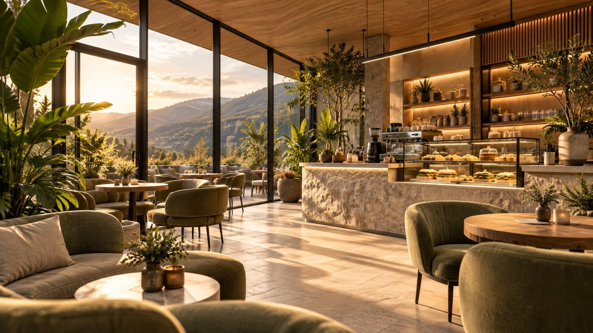
Нагория · отдел продаж · 55 м²
Кофе, завтраки и обеды для сотрудников и посетителей отдела продаж. Место, где можно сделать паузу между встречами.
Идея
По информации инициатора проекта.
ПЛАТО: кофейня на 50–60 м² с ежедневной едой: качественный кофе, завтраки, готовые перекусы и привозные обеды. Блюда готовит внешняя кухня, на точке их хранят, разогревают и подают.
Сотрудникам — ежедневное питание. Посетителям — кофе и удобное место для ожидания встречи.
Регулярное питание в течение дня
Завтраки, обеды по предзаказу, кофе и перекусыКофе, ожидание встречи, лёгкая еда
Напитки, выпечка, десерты, сэндвичиБыстрая подача к согласованному времени
Предзаказ напитков и небольших наборов для переговоровОбраз
Предлагаем деревянные рейки, как на фасаде отдела продаж, и лаймовый акцент, как у указателя «Теперь мы в Железноводске». Сочетание материалов согласуем.
#B98B58#E8DFCB#6E7B4E#D9E98A#26301F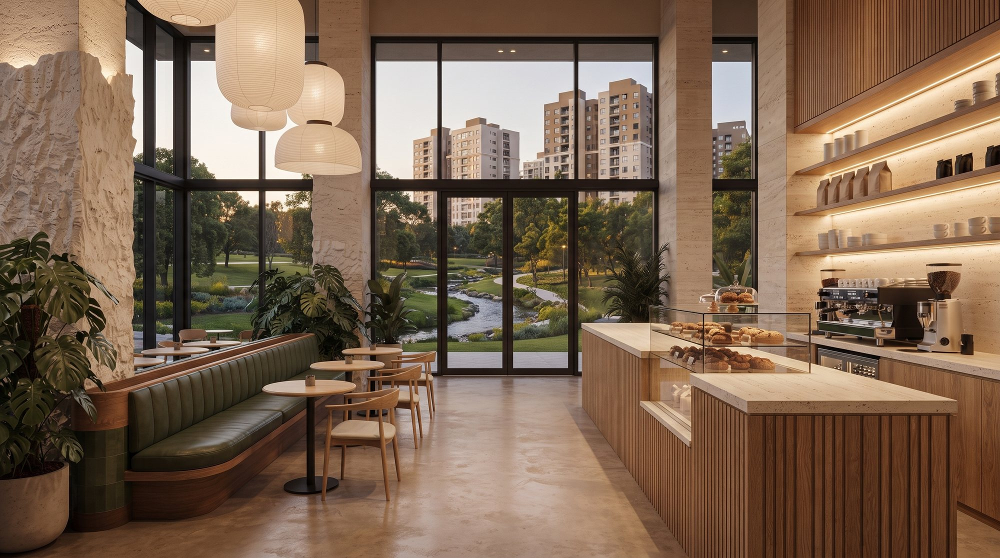
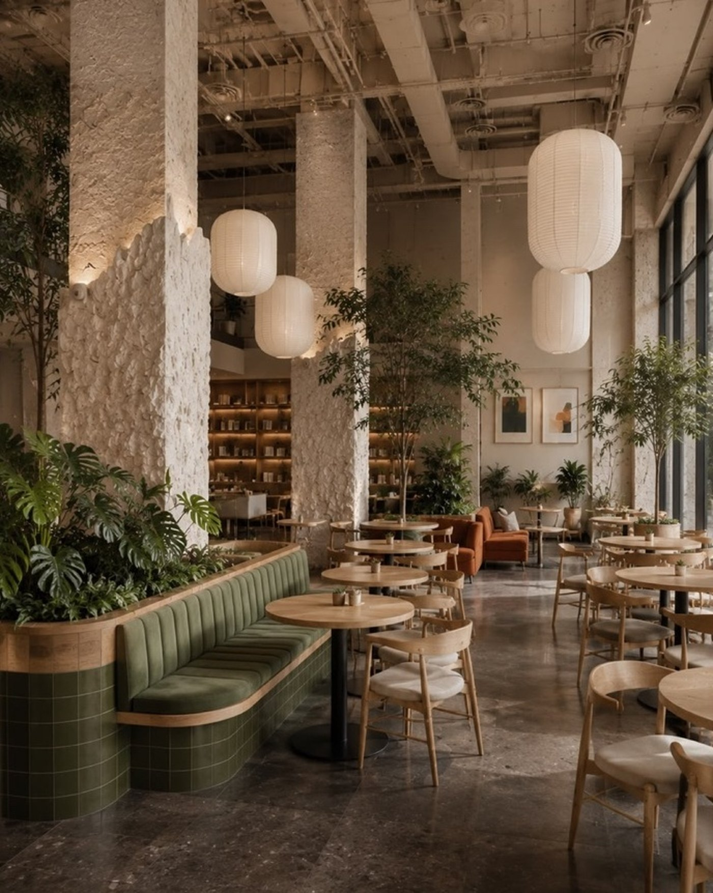
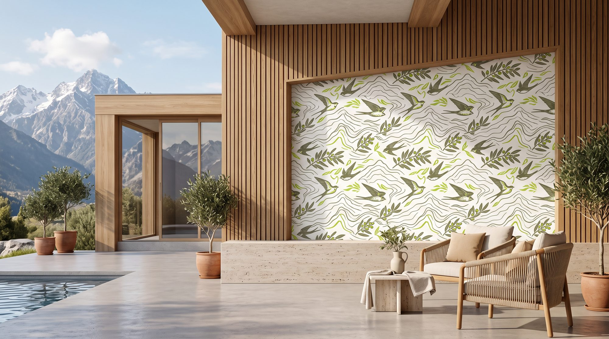
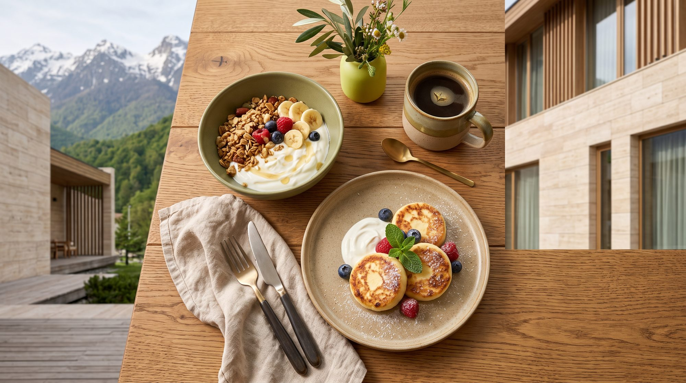
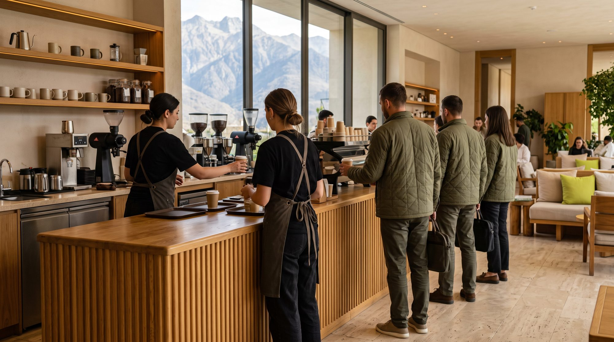
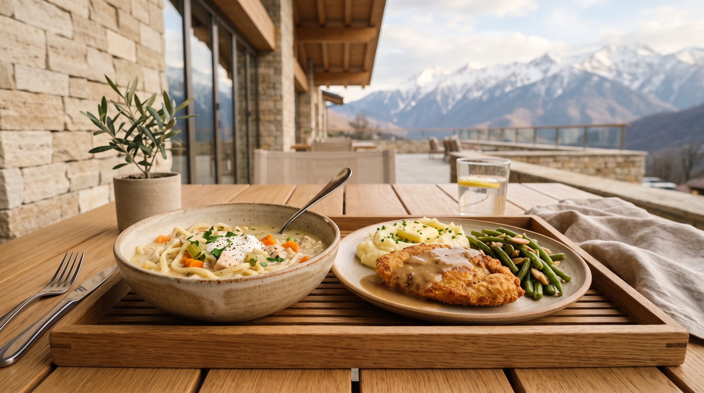
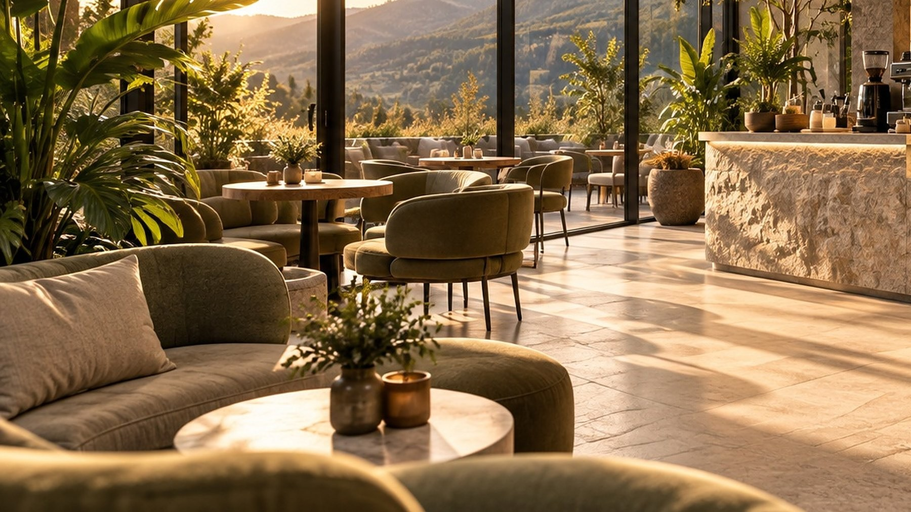
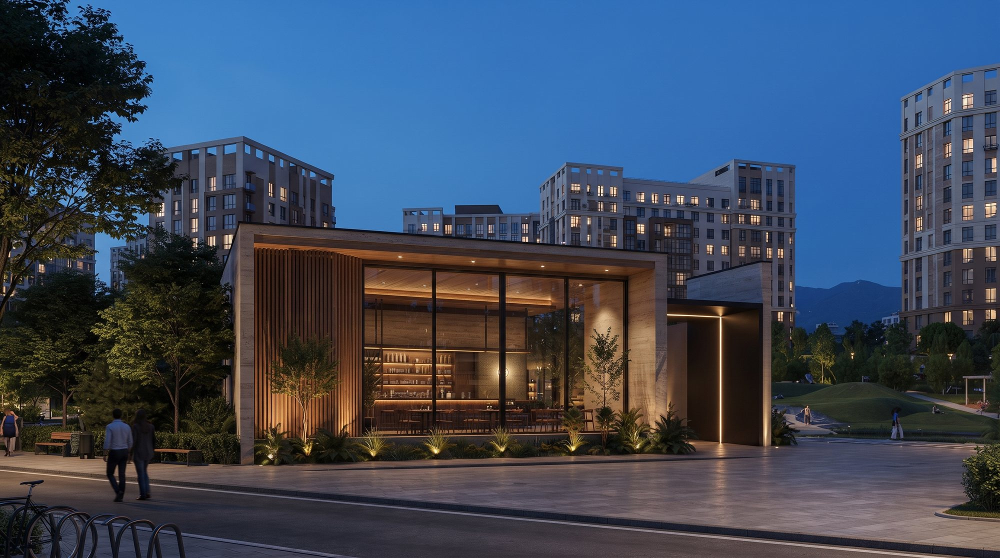
Один обычный день · ориентировочно
Эспрессо, флэт уайт и авторский напиток. Целевое время: 3–5 минут.
Сырники, каша дня, йогурт с гранолой. Готовые позиции выдаются после оплаты.
Предзаказ даёт основу для объёма поставки; небольшой запас в свободную продажу корректируем по продажам и списаниям.
Два сотрудника одновременно: бариста-кассир и приём, разогрев, выдача. Целевое время горячего обеда: 5–7 минут, проверим в тестовом режиме.
Напитки и угощения для клиентов возможны по корпоративному счёту с согласованным лимитом и ежемесячной оплатой.
Продажи и списания учтены, объёмы на следующий день корректируются.
Пространство
Предварительная схема. Планировку, проходы и инженерные системы подтверждает технолог после обследования помещения.
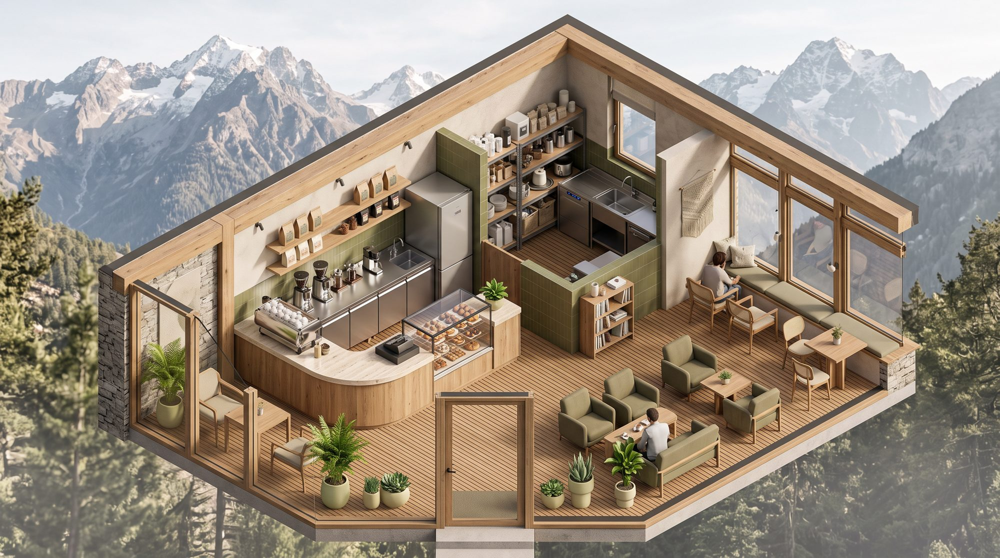
Объёмная визуализация планировки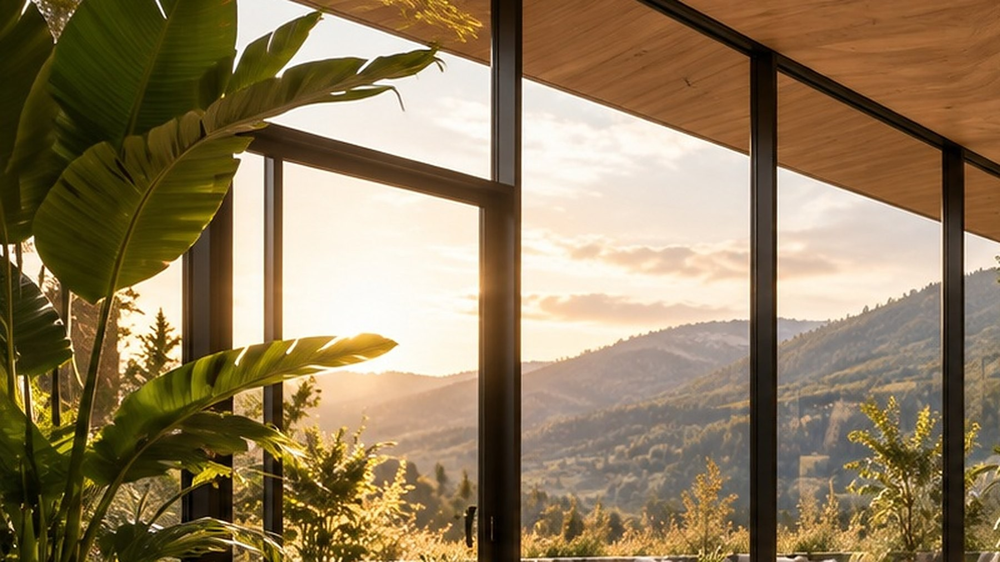
Иллюстрация потока
Подвигайте ползунки. Оба первых значения — условные вводные сценария, а не данные: ежедневное присутствие сотрудников и число покупателей нужно уточнить опросом. Для ориентира: по опросу SuperJob (июль 2026, пересказ в прессе) 19% офисных сотрудников обедают в корпоративной столовой, 13% в городских кафе, 52% приносят обед из дома.
Внешняя кухня готовит и поставляет блюда по графику. До запуска установим для каждой позиции условия перевозки, хранения, подачи и сроки реализации. На точке: напитки, приём, разогрев, выдача.
Предзаказ до установленного времени (ориентир — 10:30), выдача в несколько интервалов, ежедневный учёт продаж и списаний.
В пик два человека одновременно. Часы работы привязаны к отделу продаж: открытие до начала дня, закрытие после основного потока.